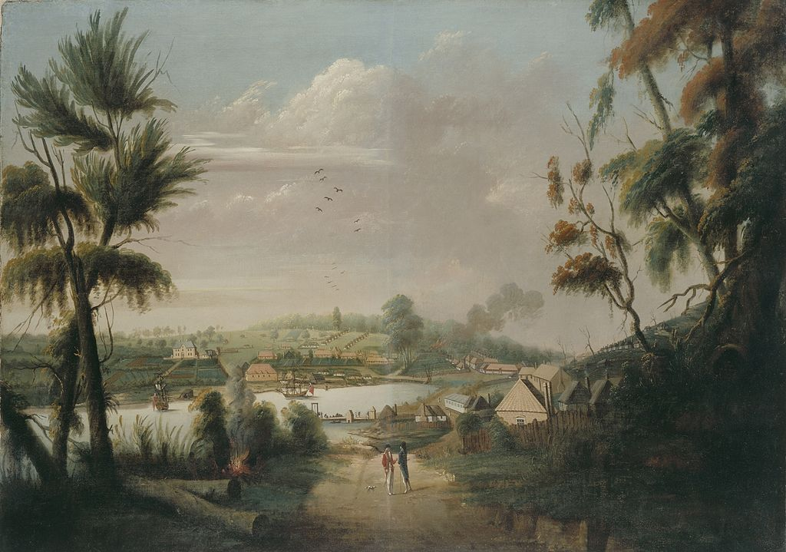

A Direct North General View of Sydney Cove, målad av straffången och konstnären Thomas Watling 1794.
Sedney Historik
Datering med C14-metoden tyder på att Sydneyregionen beboddes av infödda australier för minst 30 000 år sedan.
De traditionella inhemska invånarna i Sydney Cove var cadigalfolket, vars land en gång sträckte sig från söder om Port Jackson till Petersham.
Uppskattningar om invånarantalet före ankomsten av First Fleet 1788 förblir omtvistat, cirka 4 000-8 000 aboriginer levde i Sydneyregionen före kontakten med brittiska nybyggare.
Britterna kallade ursprungsbefolkningen "Eora",
eftersom då de frågades var de kom ifrån, svarade dessa människor: "Eora", som betyder "här", eller "från denna plats" på deras språk.
Det fanns tre språkgrupper i Sydneyregionen, som delades in i dialekter som talades av mindre klaner. De viktigaste språken darug (cadigalfolket, de ursprungliga invånarna i staden Sydney, talade en kustnära dialekt av darug), dharawal och guringai.
Varje klan hade ett territorium. Territoriets läge bestämdes av de tillgängliga resurserna. Även om urbaniseringen har förstört mycket bevis för dessa bosättningar som kökkenmöddingar, ett antal hällristningar, sniderier och grottmålningar förblir synliga i Hawkesburysandsten i Sydney Basin.
År 1770 landsteg den brittiska sjökapten löjtnant James Cook i Botany Bay på Kurnellhalvön. Det är här som Cook gjorde den första kontakten med ett aboriginskt samhälle som kallades Gweagal.
Med i Cooks besättning fanns den svenske botanikern Daniel Solander vars upptäckter gav Botany Bay dess namn. Enligt anvisning från den brittiska regeringen grundades en straffkoloni av Arthur Phillip, som anlände till Botany Bay med en flotta på 11 skepp den 18 januari 1788.
Denna plats beslutades snart som olämplig för bebyggelse på grund av dålig jord och brist på tillförlitligt färskvatten.
Phillip grundade därefter kolonin ett inlopp längre upp längs kusten, vid Sydney Cove på Port Jackson den 26 januari 1788. Den officiella kungörelsen av grundandet och namngivning av Sydney skedde nästan två veckor senare den 7 februari 1788.
Det ursprungliga namnet var avsedd att vara Albion, men Phillip namngav bosättningen efter den brittiske inrikesministern, Thomas Townshend, Lord Sydney, som ett erkännande av Sydneys roll i utfärdandet av stadgan som bemyndigande Phillip att etablera kolonin.
I april 1789 spreds en katastrofal epidemi ut, som nu tros vara smittkoppor, via Eorafolket och omgivande folkgrupper, med resultatet att de lokala aboriginerna dog i tusental, och kroppar kunde ofta ses guppande i vattnet i Sydney Harbour.
Orsaken till epidemin har alltid varit en fråga om spekulation och kontroverser, där britternas introduktion är bland de mest sannolika förklaringarna.
Under alla omständigheter var resultaten katastrofala för Eorafolket och deras anhöriga och under det tidiga 1800-talet hade den aboriginska befolkningen i Sydney Basin "reducerats till endast 10 procent enligt uppskattningarna 1788",
eller uppskattningsvis 500 till 1000 aboriginer mellan Broken Bay och Botany Bay.
Under guvernör Lachlan Macquarie (1810–1821) utökades Sydney från att enbart vara ett fångläger genom att det byggdes vägar, broar, hamnanläggningar, kyrkor och offentliga byggnader.
Brittiska och irländska straffångar utnyttjades som arbetskraft.
Under 1830- och 1840-talen växte staden snabbt tack vare invandring från Storbritannien och Irland och de första förorterna anlades. År 1842 blev Sydney officiellt stad, den första i Australien, och Charles H. Chambers blev den
första borgmästaren.